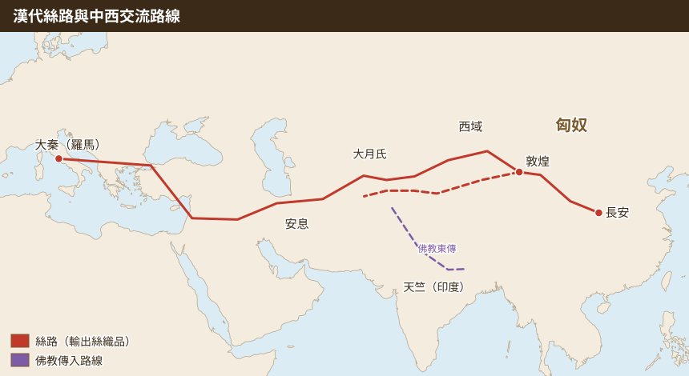
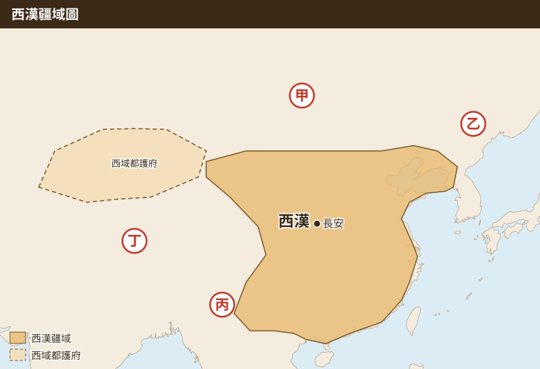
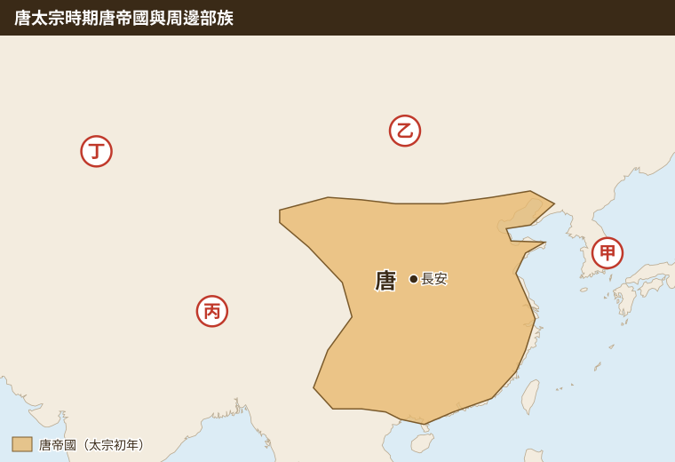
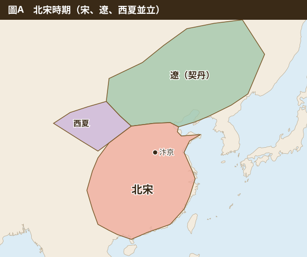
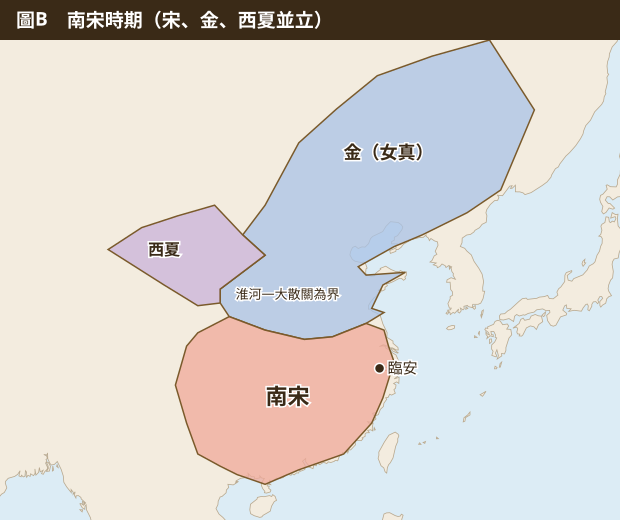
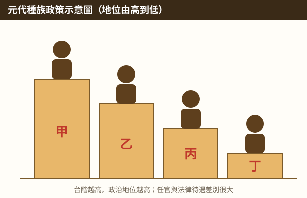
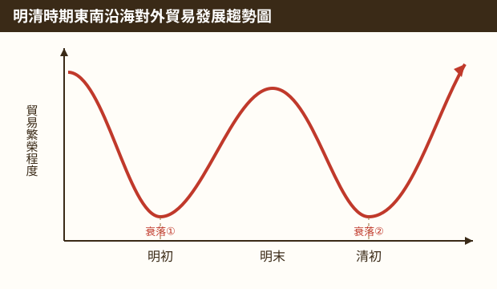
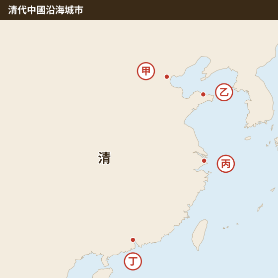
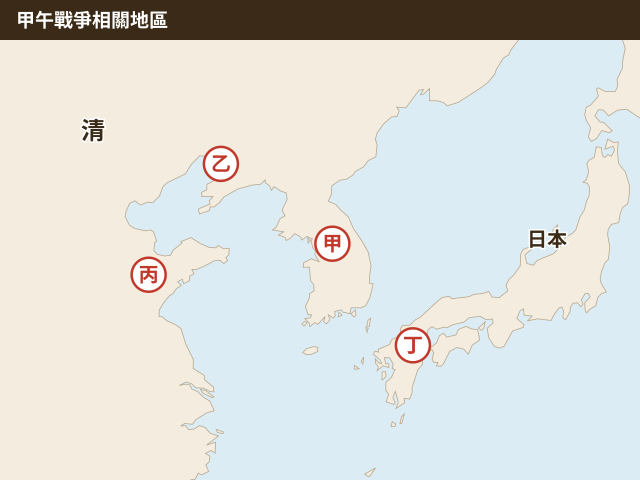

01
先秦
殷墟甲骨文
在殷墟（今河南安陽）中發現甲骨文，證實哪一個時期已進入「有冊有典」的歷史時代？
正確答案：A
殷墟是商朝後期的都城。出土的甲骨文是目前中國最早的成熟文字，記錄占卜、祭祀等事，證明商朝已有文字記載，進入「有冊有典」的信史時代。
解題關鍵：看到「殷墟」「甲骨文」就連到「商」。周以金文（鑄在青銅器上）為代表；秦統一文字為小篆；漢通行隸書。
依時代分章，共 51 題。每章開頭有重點整理與事件比較表；每題選擇答案後，立即顯示正確答案、詳解與選項辨析；作答完可下載錯題詳解 DOCX。
3 題
關鍵字：甲骨文、封建制度、宗法、諸子百家、商鞅變法
| 時代 | 政治 | 社會 | 文化・代表事物 |
|---|---|---|---|
| 商 | 神權政治；後期都城在殷（今河南安陽） | 貴族、平民、奴隸 | 甲骨文（最早成熟文字，進入「有冊有典」的信史時代）、青銅器（祭祀・身分象徵） |
| 西周 | 封建制度：天子分封諸侯（宗親、功臣、姻親、古帝王後代） | 宗法制度＋世卿世祿：貴族世襲土地・爵位・官職，平民不能受封、不能任官 | 禮樂制度規範貴族行為 |
| 東周（春秋戰國） | 王室衰微、諸侯爭霸；戰國各國變法圖強 | 封建崩壞，平民可藉才能任官、私有土地出現 | 諸子百家：儒、道、墨、法；商鞅在秦變法 |
| 比較項目 | 儒家 | 法家 |
|---|---|---|
| 代表人物 | 孔子、孟子、荀子；漢代董仲舒 | 商鞅、韓非、李斯 |
| 治國主張 | 德治、禮治，重視倫理與身分秩序 | 法治：嚴刑峻法、富國強兵、君主集權 |
| 實際政策 | 漢武帝獨尊儒術、設太學、察舉孝廉 | 商鞅：編戶籍、什伍連坐、獎勵耕戰；秦始皇統一後焚書坑儒 |
| 口訣 | 「以德服人」 | 「以法治人、國君立威」 |
在殷墟（今河南安陽）中發現甲骨文，證實哪一個時期已進入「有冊有典」的歷史時代？
正確答案：A
殷墟是商朝後期的都城。出土的甲骨文是目前中國最早的成熟文字，記錄占卜、祭祀等事，證明商朝已有文字記載，進入「有冊有典」的信史時代。
解題關鍵：看到「殷墟」「甲骨文」就連到「商」。周以金文（鑄在青銅器上）為代表；秦統一文字為小篆；漢通行隸書。
小陵以中國西周社會為背景設計養成遊戲，角色身分與作為都必須符合西周社會階級與規範。下列哪個角色設定最符合史實？
正確答案：D
西周實行封建制度：天子把土地與人民分封給宗親、功臣、姻親（如姜姓）及古帝王後代成為諸侯；諸侯再分封卿大夫。受封與任官都是「貴族」的特權，且世襲（世卿世祿）。
解題關鍵：(A)平民不能受封，要改成「貴族」。(B)西周官職由貴族世襲，平民不能任官。(C)西周時天子權威仍強；「王室衰微、與諸侯對立」是東周的現象，且姬昌（周文王）尚未成為天子。
圖中國君說：「臣民必須盡力為國君謀取利益」「國家要富強，就要嚴刑重罰」「國君要樹立威權，來操控臣民」。下列何者的政治措施可以體現此學派的精神？
正確答案：A
漫畫的「嚴刑重罰」「國君立威」「富國強兵」是法家主張。戰國時商鞅在秦國變法：編戶籍、什伍連坐、重農獎戰，使人民依法納稅服役，國家掌控人力物力，正是法家精神。
解題關鍵：(B)太學教授儒家經典，是儒家。(C)九品官人法是魏晉選才制度。(D)科舉是隋唐選才制度。後三項屬「選才制度」，與法家無關。
4 題
關鍵字：獨尊儒術、察舉孝廉、太學、匈奴、張騫通西域、絲路、佛教傳入
| 時代 | 制度 | 選才依據 | 結果・影響 |
|---|---|---|---|
| 西周 | 封建＋世卿世祿 | 貴族血緣、身分 | 官職世襲，平民無法任官 |
| 漢代 | 察舉（舉孝廉）＋太學 | 地方推薦孝順、廉能、通儒學的人 | 讀書人以學儒為進身之路；後期被豪族把持 |
| 魏晉南北朝 | 九品官人法 | 中央評選分九品，重家世 | 「上品無寒門，下品無世族」→世族興起 |
| 隋唐～明清 | 科舉考試 | 考試成績（元明清以朱熹《四書集注》為定本） | 平民可憑考試任官，抑制世族 |
| 對象 | 關係 | 重點 |
|---|---|---|
| 匈奴 | 西漢最大外患（位於北方草原） | 漢武帝派衛青、霍去病北伐 |
| 西域 | 張騫兩次出使 | 原為聯合大月氏夾擊匈奴，結果開通絲路 |
| 絲路 | 長安 → 河西走廊 → 西域 → 大秦（羅馬） | 輸出絲織品；東漢時佛教經此傳入中國 |
阿傑是生活在西漢武帝時代的讀書人，若想去中央任官，下列何者是他可以去執行的？
正確答案：A
漢武帝獨尊儒術，並以「察舉」選官：由地方官推薦孝順、廉潔有能力的人（舉孝廉），也可入太學學儒、考核優秀者任官。所以讀書人要學儒學、培養孝廉品德。
解題關鍵：(B)科舉始於隋、盛於唐。(C)封建制度是西周。(D)靠世族勢力任官是魏晉南北朝（九品官人法）。→ 對照上方「選才制度演變表」。
漫畫中大臣說：「儒家強調身分地位可以維持社會秩序，如果能將天下思想趨於儒家，國家將更好治理。」皇帝回答：「就照你的意思去辦吧！」此皇帝是誰？
正確答案：A
董仲舒向漢武帝建議「罷黜百家，獨尊儒術」，漢武帝採納，從此儒家成為中國學術思想主流與官方正統。
解題關鍵：(B)秦始皇採法家、焚書坑儒，反儒。(C)商鞅是戰國秦國的大臣，不是皇帝，且屬法家。(D)康熙是清代皇帝。

圖為漢代中西文化交流與貿易路線圖。下列關於漢代此路線的敘述，何者正確？
正確答案：A
這條路線是絲路。東漢時佛教從印度經中亞、西域，沿絲路傳入中國（白馬寺）。
解題關鍵：(B)漢代絲路西端是「大秦」（羅馬帝國）；大食是唐代的阿拉伯帝國。(C)輸出的是「絲織品」。(D)漢武帝派張騫聯絡大月氏是為了對抗「匈奴」，不是鮮卑。

圖為西漢的疆域圖，根據圖中內容判斷，此時的主要外患位於圖中何處？
正確答案：A
西漢最大的外患是北方草原的匈奴（今蒙古高原一帶），即圖中位於北方的甲處。
解題關鍵：記憶法：漢—匈奴（北）、唐—突厥（北）、北宋—遼（東北）、南宋—金（北）、明初—蒙古（北）、明末—滿清（東北）。
4 題
關鍵字：永嘉之禍、晉室南遷、胡漢融合、天可汗、漢字文化圈
| 時間 | 事件 | 結果 |
|---|---|---|
| 西晉末年（311） | 永嘉之禍：胡族在黃河流域建立政權 | 晉室南渡建東晉，江南開始開發 |
| 唐代中期（755） | 安史之亂 | 北方殘破，南方經濟漸超越北方 |
| 北宋末年（1127） | 靖康之禍：金擄徽、欽二帝 | 宋室南遷建南宋，經濟重心完全移到南方 |
| 項目 | 內容 |
|---|---|
| 天可汗 | 唐太宗滅東突厥（630），西北各族君長尊稱唐太宗為「天可汗」 |
| 漢字文化圈 | 日本、新羅（朝鮮）、越南；共同要素：漢字、儒家、典章制度、佛教 |
| 不在漢字文化圈 | 印度（佛教發源地，但用梵文，不屬漢字文化圈） |
| 胡漢融合 | 魏晉南北朝胡人入居中原，胡漢生活文化互相影響（胡床、胡食；北魏孝文帝漢化） |
圖為中國南方經濟發展示意圖。圖中的開發期是因為大量漢人從北方遷往南方，在南方建立政權所導致。促成此影響的主因應為下列何者？
正確答案：A
西晉末年發生永嘉之禍，胡族在黃河流域建立政權，北方漢人大量南遷，晉室在建康建立東晉，帶來人力與技術，南方開始開發。
解題關鍵：(B)張騫是漢代、與南方開發無關。(C)玄奘是唐代宗教交流。(D)孝文帝漢化發生在北方，不會使漢人南遷建政權。
漢代以前，狗是草原民族重要的打獵夥伴，絕對不會食用，但黃河流域的農業民族常以狗肉為食材。在魏晉南北朝後，食狗肉大幅減少，狗也從食物變成寵物。上述轉變的最主要原因為何？
正確答案：D
魏晉南北朝時大量胡人入居中原，胡漢文化互相交流。胡人不吃狗肉的習俗影響了漢人，漢人食狗肉大幅減少，屬於「胡人影響漢人」的胡化現象。
解題關鍵：(A)胡人漢化是胡人學漢人，不會讓漢人少吃狗肉。(B)唐文化外傳是影響日本、新羅等國。(C)穆斯林飲食與此無關。→ 胡漢融合是「雙向」的：漢化與胡化都有。
大唐文化包容開放，使唐帝國成為周圍國家仰慕的文化中心，新羅、倭國、中南半島東部等皆曾使用漢字、仿效儒家文化、典章制度、佛教，形成漢字文化圈。上述文化圈不包括下列何國？
正確答案：B
漢字文化圈指受唐文化影響、使用漢字的東亞國家：日本、朝鮮半島（今南韓、北韓）、越南。
解題關鍵：印度是佛教的發源地，佛教是從印度傳入中國，再由中國傳到日韓越；印度使用梵文，不屬漢字文化圈。

《資治通鑑》記載：「唐太宗貞觀4年3月，生擒頡利可汗，獻於京師。4月，西北君長詣闕請太宗為『天可汗』。」上文所述與唐太宗派兵平定圖中何區的部族有關？
正確答案：B
頡利可汗是東突厥的領袖。唐太宗滅東突厥後，西北各族尊稱他為「天可汗」。東突厥位於唐帝國北方的蒙古高原，即圖中乙區。
解題關鍵：看地圖時先找「北方草原」：唐代北方外患是突厥（分東、西突厥）。
16 題
關鍵字：重文輕武、澶淵之盟、靖康之禍、理學、商業繁榮、蒙古西征、四等人、馬可波羅
| 比較 | 澶淵之盟 | 靖康之禍 |
|---|---|---|
| 時間 | 北宋真宗（1004） | 北宋末年欽宗（1127） |
| 對象 | 契丹（遼） | 女真（金） |
| 經過 | 遼南侵，宋真宗御駕親征後議和 | 金攻破汴京，擄走徽宗、欽宗 |
| 結果 | 宋遼兄弟相稱，宋每年輸歲幣（銀、絹），維持百餘年和平 | 北宋滅亡，高宗南渡建南宋（臨安） |
| 等級 | 身分 | 對應題目 |
|---|---|---|
| 一等 | 蒙古人 | 地位最高，掌握要職 |
| 二等 | 色目人（西域、中亞、歐洲人，如馬可波羅、阿拉伯商人） | 協助理財、商業 |
| 三等 | 漢人（原金朝統治下的北方人：漢人、契丹人、女真人） | |
| 四等 | 南人（原南宋統治下的人民） | 地位最低，任官只能當副手、幕僚 |
| 面向 | 內容 |
|---|---|
| 政治 | 重文輕武、強幹弱枝（中央集權→地方兵力弱） |
| 商業 | 取消坊市限制→夜市、瓦子（娛樂場所）；交子（最早紙幣）；市舶司管理海外貿易 |
| 科技 | 活字印刷、火藥武器（火球、火槍）、指南針用於航海 |
| 學術 | 理學：北宋周敦頤開創 → 南宋朱熹集大成（《四書集注》） |
| 農業 | 引進占城稻（早熟稻），稻米產量大增 |
| 汗國 | 位置 | 記憶點 |
|---|---|---|
| 欽察汗國 | 俄羅斯一帶 | 拔都西征建立；西征曾打到匈牙利、波蘭 |
| 伊兒汗國 | 西亞（波斯） | 旭烈兀建立，滅阿拔斯王朝 |
| 察合台汗國 | 中亞 | |
| 窩闊台汗國 | 中亞北部（後併入察合台） |
周敦頤是宋代學者，著有〈愛蓮說〉一文，以出淤泥而不染修養自身品格，並將儒家融合佛學思想。其學說在宋代有何影響與發展？
正確答案：A
宋代儒家吸收佛、道思想形成「理學」。北宋周敦頤是開創者，經程顥、程頤發展，南宋朱熹集大成。
解題關鍵：(B)設立太學是漢武帝。(C)儒家成為學術主流是漢武帝獨尊儒術。(D)《四書集注》是朱熹寫的，不是周敦頤；元代以後才成為科舉定本。
史學家黃仁宇認為：「從物質生活來講，12世紀的中國，無疑已領先世界。」此主要是針對宋代哪一項特色而提出的看法？
正確答案：B
宋代商業繁榮（夜市、紙幣交子、國內外貿易發達），科技進步（活字印刷、火藥、指南針），物質生活水準領先世界。關鍵字「物質生活」＝經濟與科技。
解題關鍵：(A)兼容並蓄的多元文化是唐代特色。(C)統一幣制是秦始皇。(D)歐人東來是明清時期。
圖為劇場企劃書「瓦子春秋」：利用戲劇方式呈現宋代人民的生活樣貌（話說宋代臨安城）。下列哪一種情境最可能出現在此話劇中？
正確答案：A
「瓦子」是宋代城市中的娛樂場所。宋代取消坊市與宵禁的限制，商店可沿街開設，夜市興盛。
解題關鍵：(B)世族是魏晉南北朝。(C)以儒學經典選才、成績優異即可任官是漢代太學。(D)婦女穿胡服是唐代風氣。
圖為兩方代表進行簽約談判：「此後我們兩國以兄弟相稱，宋朝每年輸我歲幣（白銀、絹絲）。」此談判結果對兩國的外交發展帶來何項影響？
正確答案：C
這是北宋與遼（契丹）的澶淵之盟（1004）。雙方以兄弟相稱（地位平等），宋每年給遼歲幣，換來百餘年和平。
解題關鍵：(A)燕雲十六州早在五代時已被割給遼，不是此盟約的重點。(B)簽約後維持和平。(D)和親是漢、唐的做法。


歷史上的重大事件，有時會造成相鄰國家勢力的消長及版圖變遷。根據圖A演變到圖B的內容判斷，其關鍵事件為下列何者？
正確答案：B
圖A是北宋與遼並立；圖B變成南宋與金並立。中間關鍵事件是靖康之禍（1127）：女真建立的金滅遼後南下，擄走徽、欽二帝，北宋滅亡，宋室南遷建立南宋。
解題關鍵：(D)澶淵之盟後版圖沒有改變，維持和平。(C)蒙古西征是向西擴張。
老師統整「澶淵之盟」與「靖康之禍」的比較表：發生時間（北宋／南宋）、相關外族（契丹／女真）、經過（皇帝御駕親征／皇帝被俘擄）、結果（雙方維持百餘年和平／國家滅亡）。何者錯誤？
正確答案：A
靖康之禍造成「北宋」滅亡，是北宋末年的事，不是南宋。南宋是靖康之禍「之後」才建立的。
解題關鍵：易錯點：靖康之禍是北宋的「結束」、南宋的「開始」。南宋最後是被蒙古（元）所滅（1279）。
南宋末年忠臣文天祥被蒙古軍俘擄後送至京城監禁，在獄中作〈正氣歌〉，並留下〈過零丁洋〉「人生自古誰無死，留取丹心照汗青」名句。下列相關敘述，何者正確？
正確答案：D
宋代重文輕武、重用文人，文天祥正是科舉出身的文臣（狀元）。南宋於1279年被元世祖忽必烈所滅，文天祥被押往元的首都大都（今北京）。
解題關鍵：(A)元的國都是「大都」（北京），杭州是南宋的臨安。(B)滅南宋的是忽必烈，成吉思汗1227年就已去世。(C)靖康之禍（1127）是北宋末年，比文天祥早約150年。
下列四段話分別可描述中國四個時代的社會特色：(甲)九品官人之法造成「上品無寒門，下品無世族」(乙)實施差別待遇的種族政策，種族地位分為四種階級 (丙)封建盛行，貴族按身分受封土地並遵守禮樂規範 (丁)重視文人政治，儒家融合佛學思想形成「理學」。其時間順序應為何？
正確答案：D
先判斷朝代：丙＝西周（封建）；甲＝魏晉南北朝（九品官人法）；丁＝宋（理學）；乙＝元（四等人）。依時間：西周→魏晉→宋→元，即丙→甲→丁→乙。
解題關鍵：解題法：先把每一句換成朝代，寫在旁邊，再排序。宋（理學）一定在元（四等人）之前。
中國某朝代因國家集權，萬里之遠，皆朝廷所制，使地方兵力減弱，導致外族入侵時地方無力抵禦，最後因皇帝被北方女真族擄走而滅亡。上述指的是哪一亂事？
正確答案：C
宋代為防武人割據，採「強幹弱枝」：兵權、財權收歸中央，地方兵力弱。金（女真）南下時地方無力抵抗，徽、欽二帝被擄，北宋滅亡＝靖康之禍。
解題關鍵：(A)文字獄是清代思想控制。(B)清兵入關滅的是明朝。(D)蒙古西征向西擴張。關鍵字「女真擄走皇帝」＝靖康之禍。
導遊提及：「蘇聯在沒有解體之前，嚴禁蒙古人祭祀成吉思汗，理由是蒙古人曾經在俄國土地上建立欽察汗國統治他們。」上述汗國的建立，應該與哪一件史事有關？
正確答案：B
蒙古曾三次西征，其中拔都率軍西征時征服俄羅斯一帶，建立欽察汗國，統治俄羅斯長達約兩百年。
解題關鍵：(A)鐵木真（成吉思汗）1206年建國於蒙古高原，不在俄國。(C)滅西夏在中國西北。(D)忽必烈建元朝在中國。→ 四大汗國都是「西征」的結果。
13世紀，匈牙利布達佩斯有戰爭記載：「來自東方的敵兵分兩路，一路從正面用火藥攻城，另一路從後面包抄，騎兵隊就像打獵一樣邊追邊射，最終造成我軍七萬傷亡。」上述敵軍是指哪個民族？
正確答案：A
13世紀蒙古拔都西征，一路打到匈牙利、波蘭。蒙古以騎射見長，又從金、宋取得火藥技術，用於攻城。
解題關鍵：線索：「13世紀」＋「來自東方」＋「騎兵」＋「火藥」＝蒙古。東突厥是唐代；女真沒有打到歐洲；阿拉伯人在西亞，不是「來自東方」。
元代來自阿拉伯的醫師到中國行醫，帶來先進醫療技術，朝廷設立專門研究該醫學知識的單位，將成果編成《回回藥方》。圖中書籍與哪一宗教文化傳入中國有關？
正確答案：D
「回回」指信奉伊斯蘭教的穆斯林。阿拉伯人信伊斯蘭教，元代大量色目人來華，伊斯蘭文化（醫學、天文、清真寺）隨之傳入。
解題關鍵：(B)道教是中國本土宗教，不是「傳入」。(A)佛教來自印度（漢代）。(C)基督教（耶穌會）明末大量傳入。
南宋時期住在臨安城的邱翰，到元朝統治時終日苦讀，只為努力通過國家考試成為官員。他應該將下列哪本著作熟讀，才有機會上榜？
正確答案：D
元代恢復科舉後，以朱熹的《四書集注》為考試標準答案（定本），明清沿用。
解題關鍵：(A)《西遊記》是明代小說。(B)《世說新語》是南北朝筆記小說。(C)《回回藥方》是醫書。

曾在南宋生活的阿明，現正經歷元朝統治。他努力讀書後雖考到官員，但因他是圖中種族政策下的哪個階級，因此只能擔任幕僚及副手？
正確答案：D
元代四等人：蒙古人＞色目人＞漢人＞南人。原南宋統治下的人民被列為「南人」，地位最低（丁），任官多只能當副手或幕僚。
解題關鍵：對照上方「元代四等人」表。原金朝統治的北方人（含契丹、女真）是第三等「漢人」。
13世紀，歐洲人馬可波羅到中國經商，受元世祖重用，留居中國17年。他見到人們使用蓋有官印的紙張交易，價值等同金銀，通行全國；首都築有通往各地的道路，每隔一段距離設置招待所，供官員及過往商旅使用。根據上文，何者敘述正確？
正確答案：A
元帝國版圖橫跨歐亞，陸路有驛站網路，海路有泉州等大港，海陸貿易都很發達。紙幣（交鈔）通行全國。
解題關鍵：(B)招待所是「驛站」；市舶司是管理海外貿易的機構。(C)馬可波羅是歐洲人，屬「色目人」。(D)元的首都是大都（今北京），杭州是南宋首都臨安。
元代與清代皆以異族入主中原，兩者的發展有不少相似之處。下列有關兩者的比較，何者錯誤？（選項依照片辨識）
正確答案：B
元代採「種族分化」（四等人），對漢人歧視明顯；清代則對漢人採「高壓與懷柔並行」：高壓如文字獄、薙髮令；懷柔如開科舉、修書、任用漢官。所以說「元、清皆」採高壓懷柔並行是錯的。
解題關鍵：(C)正確：鐵木真統一蒙古各部；明將吳三桂開山海關引清兵入關。
10 題
關鍵字：明太祖定都南京、成祖遷都北京、鄭和下西洋、倭寇、海禁、流寇、滿清、利瑪竇、美洲白銀與作物、日本鎖國（長崎）
| 時期 | 北方 | 東南沿海 | 相關事件 |
|---|---|---|---|
| 明初～中期 | 蒙古（成祖遷都北京「天子守國門」；英宗土木堡之變） | 倭寇（日本海盜）→ 實施海禁 | 鄭和下西洋、南海諸國朝貢 |
| 明末 | 滿清（女真，後金）→ 袁崇煥守山海關、寧遠 | （海上貿易恢復） | 流寇李自成攻陷北京（1644），明亡 |
| 人物 | 朝代 | 事蹟 |
|---|---|---|
| 張騫 | 西漢 | 出使西域，開通絲路 |
| 玄奘 | 唐 | 前往印度取經，著《大唐西域記》 |
| 馬可波羅 | 元 | 歐洲人，受忽必烈重用，著《馬可波羅遊記》 |
| 鄭和 | 明成祖～宣宗 | 七下西洋（1405～1433），最遠到非洲東岸；促進華人移居東南亞 |
| 利瑪竇 | 明末 | 耶穌會傳教士，和徐光啟合譯《幾何原本》 |
| 徐光啟 | 明末 | 與利瑪竇合作，引進西方科學 |
| 項目 | 內容 |
|---|---|
| 新航路後 | 西班牙以馬尼拉為據點，大帆船橫越太平洋往返美洲（墨西哥） |
| 中國輸出 | 絲綢、瓷器（景德鎮）、茶葉 |
| 中國輸入 | 美洲白銀（成為貨幣主體）、美洲作物（玉米、番薯、馬鈴薯）→ 人口大增 |
| 日本 | 江戶幕府鎖國，只開放長崎與荷蘭、中國貿易 → 「蘭學」 |
家豪報名參加一場演講會，內容是以張騫、玄奘、徐光啟等人的事蹟，引起熱烈討論。由此推斷，此演講主題最可能是下列何者？
正確答案：D
張騫通西域（漢）、玄奘到印度取經（唐）、徐光啟與利瑪竇合作翻譯西學（明末），三人共同點都是「中外交通與文化交流」。
解題關鍵：(A)只有玄奘與宗教有關，張騫不是。找「三個人的共同點」，不要只看其中一個人。對照「歷代中外交流人物」表。
圖為15世紀某事件後，人口從廈門等地移往東南亞的移動路線圖。此路線應與下列何者最相關？
正確答案：B
15世紀初明成祖派鄭和七下西洋，打通到東南亞、南洋的航路，此後大批閩粵人民移居東南亞，形成華人社會。
解題關鍵：(A)新航路是歐洲人開闢（15世紀末），路線方向是歐洲往東。(C)傳教士是西方人來中國。(D)日本鎖國與華人南移無關。

圖為明清時期海上貿易發展趨勢圖，顯示明初、清初兩時期東南地區對外貿易曾兩度衰落。依史實判斷，明初衰落的原因為何？
正確答案：B
明初倭寇（日本海盜）侵擾東南沿海，明太祖實施海禁，禁止人民出海貿易，東南對外貿易因此衰落。
解題關鍵：(D)鄭氏政權是「清初」衰落的原因（清廷頒遷界令、海禁）。(C)蒙古、女真在北方。(A)歐洲人來華反而帶動貿易。
四人敘述：勁豪「我目前在專門製作瓷器的景德鎮打工」；嬿如「政府引進了早熟稻，使稻米產量大增」；宜靜「現在買東西，可以用白銀或銅錢」；文億「晚餐有馬鈴薯可以吃，不用餓肚子了」。哪一個人生活的朝代與其他人不一樣？
正確答案：B
引進早熟稻（占城稻）是北宋的事；景德鎮瓷器業、白銀成為通用貨幣、美洲作物馬鈴薯傳入，都是明清時期的特色。
解題關鍵：馬鈴薯是美洲作物，一定是新航路之後（明末以後）；白銀大量流通也是明代中期以後。
金庸小說《碧血劍》描述的是明代末年，鎮守山海關名將袁崇煥之子袁承志的故事。書中提到：「先父當年在關遼、寧遠兩次大捷，得力於西洋人的紅夷大炮甚多。」袁崇煥當時所抵抗的是哪一外患？
正確答案：B
明末最大外患是東北的女真（努爾哈赤建後金，後改國號清）。袁崇煥鎮守山海關、寧遠，用紅夷大炮擊退後金。
解題關鍵：關鍵字「明代末年」＋「山海關、寧遠（東北）」＝滿清。倭寇是明代中期東南沿海。
振章觀賞電視劇《大明風華》，劇中內容以明代初年成祖到中期英宗年間為歷史背景。根據史實，下列何者「不會」出現在此劇中？
正確答案：D
流寇李自成攻陷北京、崇禎帝自縊，是明朝「末年」（1644）的事，不在成祖～英宗的範圍內。
解題關鍵：(A)鄭和下西洋在成祖時。(B)明初～中期蒙古常侵擾（英宗土木堡之變被瓦剌俘擄）。(C)鄭和下西洋後南海諸國來朝貢。
麗君到北京參觀紫禁城。紫禁城建於明成祖永樂年間，完工後明成祖下詔遷都北京，主要是為了就近防備當時常南侵的北方外族。此外族應為何者？
正確答案：C
明朝推翻元朝後，蒙古退回北方草原仍常南侵。明成祖遷都北京，「天子守國門」，就近防禦蒙古。
解題關鍵：(A)女真是明末才成為大患。(B)倭寇在東南沿海。(D)契丹是遼，在宋代。
北京明十三陵葬有13位明代皇帝，但明代共有15位皇帝，除了明惠帝下落不明外，明太祖則安葬於建國初期的首都。明太祖的陵寢應位於下列何地？
正確答案：D
明太祖朱元璋滅元後定都應天（今南京），死後葬於南京的孝陵。明成祖才遷都北京，所以十三陵沒有明太祖。
解題關鍵：(A)長安是漢、唐首都。(B)洛陽是東漢等朝首都。(C)臨安（杭州）是南宋首都。
中國考古發現在南海西沙群島海域，有許多數百年前來自泉州的陶瓷等船貨，預估時間為宋代到明清。關於此時期中國海上貿易的敘述，何者正確？
正確答案：B
新航路開通後，西班牙以菲律賓馬尼拉為據點，用大帆船往返馬尼拉與美洲，中國絲綢、瓷器經馬尼拉運到美洲，美洲白銀流入中國，海上絲路因此橫跨太平洋。
解題關鍵：(A)市舶司在唐代就已設立（廣州），不是宋代才開始。(C)佛教是由印度傳入中國，不是由中國經南海向外擴張。(D)傳教士來華等，文化交流頻繁。
某地的歷史文化博物館，自我定位為「海外交流史博物館」，展示了與荷蘭、朝鮮等國的文獻資料與美術工藝品，還有「蘭學」常設展區，將鎖國期間開啟與西方交流的相關文物呈現在眾人面前。上述的某地最有可能是下列何者？
正確答案：B
日本江戶幕府實施鎖國，但仍開放長崎與荷蘭、中國貿易。透過荷蘭傳入的西方學問稱為「蘭學」。關鍵字：「鎖國」＋「荷蘭」＋「蘭學」＝日本長崎。
解題關鍵：(D)澳門是葡萄牙人租居的地方。(A)應天（南京）、(C)北京都在中國，與「蘭學」無關。
14 題
關鍵字：鴉片與白銀外流、林則徐、鴉片戰爭、南京條約、領事裁判權、英法聯軍、自強運動、明治維新、甲午戰爭、戊戌變法、八國聯軍、日俄戰爭、立憲運動
| 時間 | 事件 | 條約・結果 | 後續改革・影響 |
|---|---|---|---|
| 1839～1842 | 鴉片戰爭（英） | 南京條約：割香港、五口通商；1843虎門條約取得領事裁判權；1844望廈條約（美） | 開港通商 → 通商口岸出現報刊等新媒體；但「沒有改革」 |
| 1856～1860 | 英法聯軍（英、法） | 天津條約、北京條約：臺灣開港（淡水、安平等）、長江內地通商；焚毀圓明園 | 1861成立總理各國事務衙門 → 自強運動開始 |
| 1861～1894 | 自強運動 | 奕訢、曾國藩、李鴻章；兵工廠、輪船招商局、電報、派幼童留美 | 只學「器物」（船堅砲利） |
| 1868～ | 日本明治維新 | 廢藩置縣（1871）、鐵路（1872）、頒布憲法（1889）、義務教育 | 全面西化 → 富強 |
| 1894～1895 | 甲午戰爭（日） | 起因朝鮮問題；馬關條約割臺澎 | → 1898戊戌變法（學制度），百日失敗 |
| 1900 | 八國聯軍 | 義和團事件；辛丑和約 | → 清廷推行新政 |
| 1904～1905 | 日俄戰爭（在中國東北） | 日本（立憲）勝俄國（專制） | → 國人認為立憲能強國 → 立憲運動 |
| 比較 | 自強運動 | 明治維新 | 戊戌變法 |
|---|---|---|---|
| 國家 | 清 | 日本 | 清 |
| 背景 | 英法聯軍後 | 黑船事件（美國培里叩關）後 | 甲午戰敗後 |
| 層面 | 器物（武器、技術） | 器物＋制度＋思想全面西化 | 制度（君主立憲） |
| 結果 | 甲午戰敗，宣告失敗 | 成功，躋身強國 | 僅百日即失敗 |
19世紀初期，中國出現「銀漏」問題，所謂的「銀漏」就是白銀外流，白銀短缺後價格上漲，銅錢價格相對低賤，嚴重影響民生。當時造成銀漏的原因，最有可能是下列何者？
正確答案：A
英國為扭轉對華貿易逆差，大量走私鴉片到中國，中國以白銀購買鴉片，造成白銀大量外流（銀漏）、銀貴錢賤。這也是後來林則徐禁煙、引發鴉片戰爭的原因。
解題關鍵：(B)戰敗賠款是鴉片戰爭「之後」才開始，題目說19世紀初期。(D)朝貢貿易是中國「厚往薄來」，不會造成大規模白銀外流。
表為鴉片輸入中國的數量：1799年4,000箱、1820年7,889箱、1825年12,576箱、1830年20,331箱、1835年35,445箱、1839年40,200箱。根據表中資訊判斷，下列敘述何者正確？
正確答案：C
鴉片輸入數量逐年大增，中國用白銀支付，導致白銀外流（與上一題同一概念）。
解題關鍵：(A)主要輸入者是英國（東印度公司）。(B)導致的是1840年「鴉片戰爭」，清法戰爭是1884年因越南問題。(D)數量是日益增加。

有一位臣子上書皇帝：「鴉片流毒於天下，則危害甚巨……使數十年後，中原幾無可以禦敵之兵，且無可以充餉之銀。」皇帝因而派他去查禁鴉片。上述中的臣子應是去圖中何地？
正確答案：D
這位臣子是林則徐。鴉片戰爭前清廷只開放廣州一口通商（公行制度），鴉片也從廣州進口，所以道光皇帝派林則徐到廣州禁煙（虎門銷煙），圖中丁＝廣州。
解題關鍵：地圖由北到南：甲（天津一帶）、乙、丙（上海一帶）、丁（廣州）。記「一口通商＝廣州」。
表為某條約部分內容：原告和被告均為英國人，由英國駐軍領事審判，中國官員不得過問；原告為中國人、被告為外國人，由領事審判……。依表判斷，此條約可能出現在下列哪一事件後？
正確答案：C
表中內容是「領事裁判權」：外國人在中國犯案由本國領事審判。英國在鴉片戰爭後的虎門條約（1843）取得，美國在望廈條約（1844）取得。表中只出現英國、美國，沒有法國。
解題關鍵：(A)英法聯軍會有「法國」。(B)自強運動是改革，不是戰爭條約。(D)黑船事件發生在日本。
光緒3年，中國派郭嵩燾為駐英使節，他了解歐洲政治與教育後，盛讚西方的管理概念和政策，建議清廷加以仿效，卻引起誤解，認為他想向英國稱臣而被迫辭職。顯示當時中國推動的改革仍局限於哪一層面？
正確答案：D
光緒3年（1877）正值自強運動，清廷只學西方「船堅砲利」的器物層面，不願學政治制度。郭嵩燾主張學西方制度反被排擠，正說明改革局限在器物。
解題關鍵：改革層次：自強運動＝器物；戊戌變法＝制度；新文化運動＝思想。
據清代派往海外的留學監督簽呈：「這些寄宿孩童，滿口洋文……穿起洋服連辮子都剪了……。」因這份簽呈，清代派往留美的學生於光緒7年全數被召回。清代派幼童留美與下列哪一史事有關？
正確答案：C
1872年曾國藩、李鴻章接受容閎建議，派幼童赴美留學，是自強運動在「教育」方面的措施；1881年（光緒7年）被召回。
解題關鍵：(D)戊戌變法在1898年，晚於光緒7年（1881），時間不合。
小翰整理某時期清廷推動的重要建設：外交—成立總理各國事務衙門；軍事—成立兵工廠、造船廠、北洋艦隊；教育—派幼童赴美留學；經濟—興辦煤礦、鐵路、電報、紡織事業。這些建設最有可能發生在下列哪一事件之後？
正確答案：B
表中建設都是「自強運動」。英法聯軍（1856～1860）攻入北京、焚毀圓明園，清廷受到震撼，1861年成立總理各國事務衙門，開始自強運動。
解題關鍵：鴉片戰爭後清廷「沒有改革」，常被誤選。記：英法聯軍 → 自強運動。
圖為政府1957年發行的招商局創業85週年紀念郵票，招商局對於清末第一個改革運動別具意義。關於上述改革運動的敘述，何者有誤？
正確答案：D
自強運動始於1861年（咸豐11年），是「英法聯軍」之後，不是鴉片戰爭後。鴉片戰爭後清廷並沒有進行改革。
解題關鍵：(A)1861年仍是咸豐年間，正確。(B)(C)正確。→ 與上一題同一觀念。
小翰上課內容：一、1871年正式「廢藩置縣」，建立中央集權；二、1889年頒布憲法；三、1872年第一條鐵路通車；四、選派學生出國留學；五、推動義務教育、成立各級學校。其上課主題最有可能是下列何者？
正確答案：D
「廢藩置縣」是日本的制度（藩＝日本大名的領地），「1889年頒布憲法」是日本明治憲法，這些都是明治維新的內容。
解題關鍵：清廷自強運動沒有頒布憲法、也沒有廢藩置縣。看到「藩」「憲法（1889）」→ 日本。

1894年，中日甲午戰爭爆發，中國戰敗。上述戰爭爆發的原因，與圖中哪一個地方有關？
正確答案：A
1894年朝鮮發生東學黨之亂，中、日同時出兵朝鮮，爆發甲午戰爭。戰後簽馬關條約，中國承認朝鮮獨立，割讓臺灣、澎湖。圖中甲＝朝鮮。
解題關鍵：甲午戰爭的起因是「朝鮮問題」；結果是「割臺」。
1905年創刊的《時事畫報》為晚清革命派在廣州創辦的著名文藝刊物，也是中國現代政治漫畫刊物的鼻祖之一。晚清新媒體的創立與下列何事最有關？
正確答案：C
鴉片戰爭後五口通商，外國人在通商口岸（上海、廣州等）創辦報刊，西式印刷與報紙傳入，中國人也開始辦報，新媒體因此出現。
解題關鍵：(A)耶穌會士是明末清初，以傳教、科學為主。(D)義和團是排外運動。
某時期《申報》刊登漫畫，作者的意思是：「立憲制度與君主專制不能相容。」以此回應當時清廷即將進行的變革。圖中的漫畫最早應出現於下列何時？
正確答案：D
1905年日俄戰爭，立憲的日本打敗專制的俄國，國人認為「立憲能強國」，立憲呼聲高漲，清廷1906年宣布預備立憲。漫畫討論立憲 vs 專制，應出現在日俄戰爭後。
解題關鍵：(C)八國聯軍後清廷推行「新政」，但立憲運動要到日俄戰爭後才興起。
圖中藥品原名為「征露（俄羅斯）丸」，是日本於1904年為治療當時上戰場的軍人而發明的藥物。下列關於這場日俄之間的戰爭，何者敘述正確？
正確答案：D
日俄戰爭（1904～1905）在中國東北開打，日本獲勝。立憲的日本打敗專制的俄國，促使中國展開立憲運動。
解題關鍵：(A)日本勝。(B)日本勢力在甲午戰後就已進入朝鮮。(C)雙方爭的是中國「東北」與朝鮮，不是山東。
亨利到上海電信博物館參訪，由導覽可知這些文物見證了百年來中國電信發展和轉型的歷程。上述的電信事業應開通於何時？
正確答案：B
中國電報是自強運動時期李鴻章推動的（1881年天津—上海電報線），屬19世紀下半葉。
解題關鍵：自強運動＝1861～1894＝19世紀下半葉。明末清初還沒有電報。